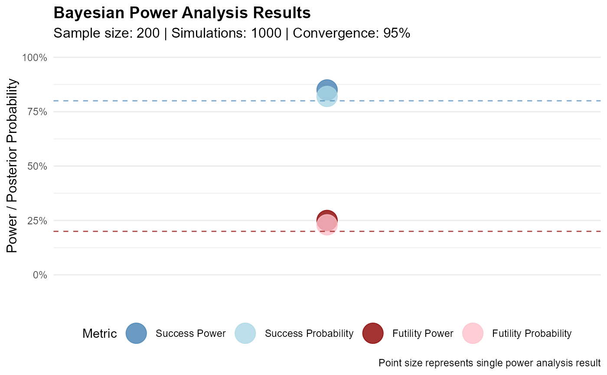
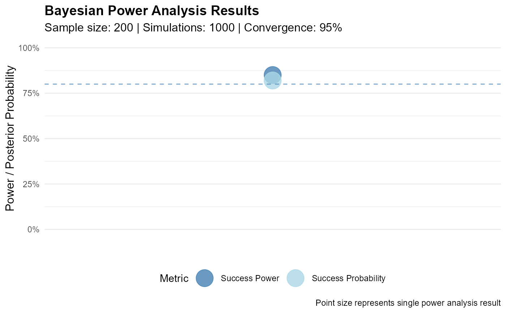
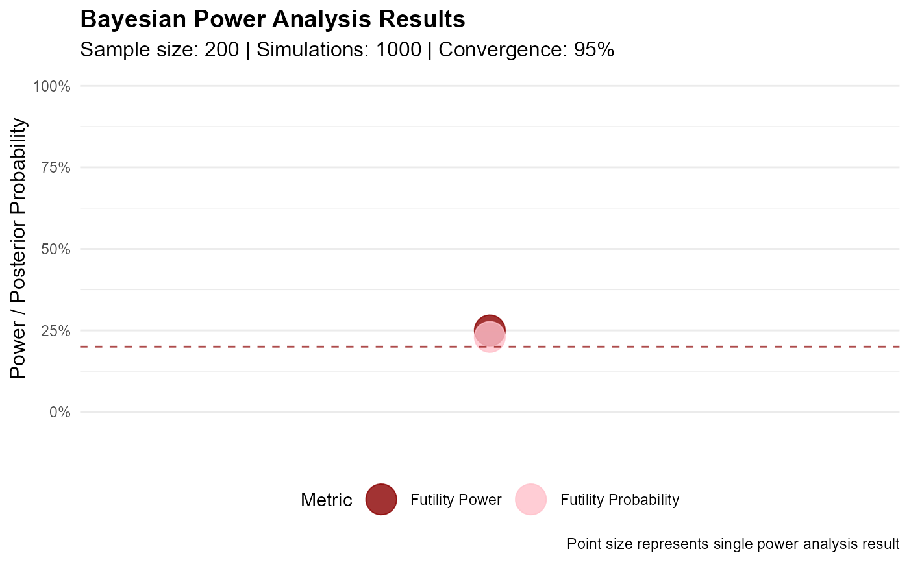

Plot Power Analysis Results
plot.rctbayespower.RdCreate visualizations for single power analysis results by converting them to a grid format and using the existing grid plotting functionality.
Usage
# S3 method for class 'rctbayespower'
plot(x, type = "comparison", metric = "both", ...)Arguments
- x
An object of class 'rctbayespower' returned by power_analysis()
- type
Type of plot to create. For single power analysis results, only "comparison" is supported, showing power vs posterior probabilities
- metric
Which power metric to display:
"success" - Success power and probability
"futility" - Futility power and probability
"both" - Both success and futility power and probabilities (default)
- ...
Additional arguments (currently unused)
Examples
# \donttest{
# Create a mock power analysis result object
power_result <- structure(list(
study_parameters = list(
n_control = 100,
n_treatment = 100,
target_param = "grouptreat",
threshold_success = 0.2,
threshold_futility = 0,
p_sig_success = 0.975,
p_sig_futility = 0.5,
target_power_success = 0.8,
target_power_futility = 0.2
),
power_success = 0.85,
power_futility = 0.25,
mean_prob_success = 0.82,
mean_prob_futility = 0.23,
convergence_rate = 0.95,
n_simulations = 1000,
successful_fits = 950,
median_effect_estimate = 0.48,
sd_median_effect_estimate = 0.12
), class = "rctbayespower")
# Create plot showing both success and futility metrics
plot(power_result)

# Show only success metrics
plot(power_result, metric = "success")

# Show only futility metrics
plot(power_result, metric = "futility")

# }